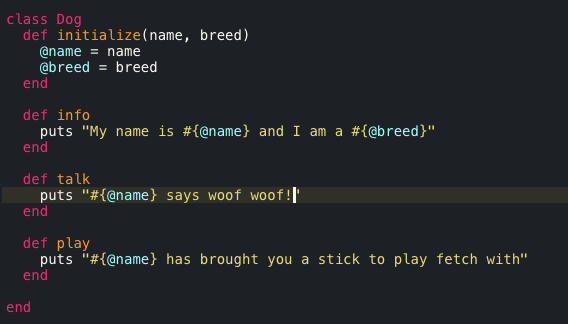
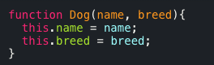
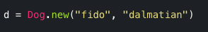
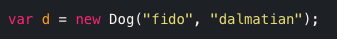

JavaScript vs Ruby
DBC Phase 0 Week 7
January 23, 2015
When learning a new programming language, it can be helpful to draw parallels to languages you are already familiar with, and to identify the similarities/differences. Here we will compare Ruby classes to JavaScript contructor functions. They are both used to create "objects". However, the idea of an object is different in Ruby vs. JavaScript. In Ruby, everything is an object-strings, arrays, methods, even classes- you name it, and it is an object. Classes are then used as a blueprint to create instances of an object of a certain type. In JavaScript, objects are more analogous to Ruby's hashes. Essentially, they are a way to store properties in the form of key/value pairs, and they are their own distinct data type. Constructors are also used as a blueprint to create objects of a certain type.
Let's look at what class declaration in Ruby looks like, versus constructor declaration in JavaScript. Both of the following pieces of code will allow you to create a Dog object.
| Ruby Class | JavaScript Constructor |
|---|---|
|  |  |
Here you can see that the constructor function is similar to the initialize method within a constructor. Both are used to assign variables to that particular Dog object, and to give them the values that are passed in. However, the assignment is a bit different. Ruby uses the @ symbol to sygnify that these are instance variables. JavaScript on the other hand uses the keyword this which is used to refer to the current object you are constructing.
You can also see one of the differences between the two. A Ruby class will also usually include methods for that object type. When you create a new Dog object in Ruby, you will also be able to use the info, talk, and play methods on it. This is technically allowed in JavaScript as well-you can add a property to the Dog constructor that is a function, however this is not recommended in most cases. If a function is included in a constuctor, it is re-declared each time you use the constructor to create a new object, which can cause memory issues down the line. What you want to do is declare a function once, and then have it associated with any object of that type-this is done through prototypes. Prototypes are a bit beyond the scope of this post, but I suggest you look into it if interested.
Another difference is the way you declare a new object after defining a class in Ruby or a constructor in JavaScript. The code below demonstrates how to to it in each language.
| Ruby | JavaScript |
|---|---|
|  |  |